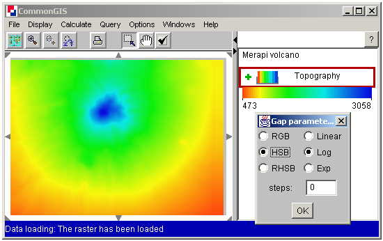

Choosing color scale parameters
With this dialog you can vary interpolation parameters for current region
1) Color space
RGB - classical color space of three components (Red, Green, Blue). The system interpolates each of them independently
HSB - Hue, Saturation, Brightness. Hue treated as a range, not as angle for circular representation, so with this color space you could never cross pure red. This color space is good for producing rainbow-looking scales.

RHSB - "Reversed" HSB - the same as HSB, but Hue always crosses red. With this color space you can get blue-red-yellow transition between colors, for example.
2) Interpolation function
You can choose between Linear, Logarithmic and Exponent functions for color interpolation. This option could be helpful for some maps to get more pleasant color transitions to recognize value changes easily.
3) Division of range into a number of constant color "steps"
For some tasks it's better to decrease the number of colors on a map. This field gives you such an opportunity. If you enter a positive value here you'll get step transition between colors.
The colors of first and last step are exactly the same as the colors for beginning and the end of current region.
Values 0 and 1 are special: 0 means smooth transition and 1 means that the whole current region is painted in one color which is the color of lower end of the region.